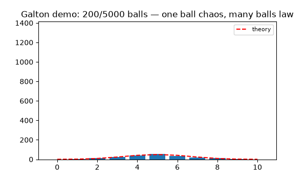
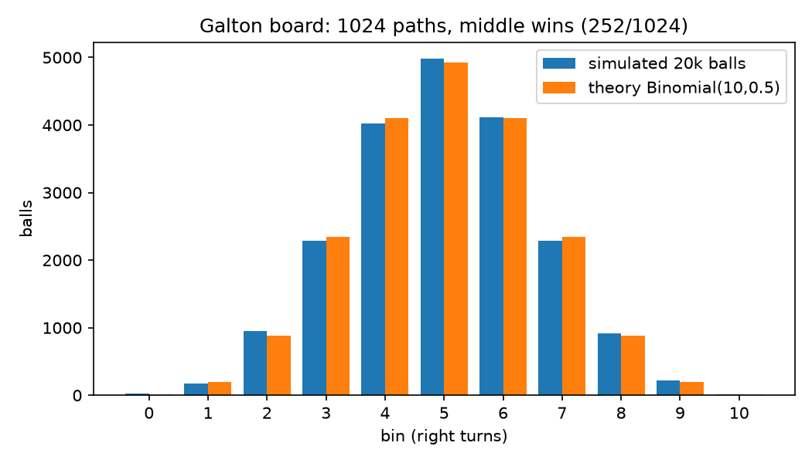
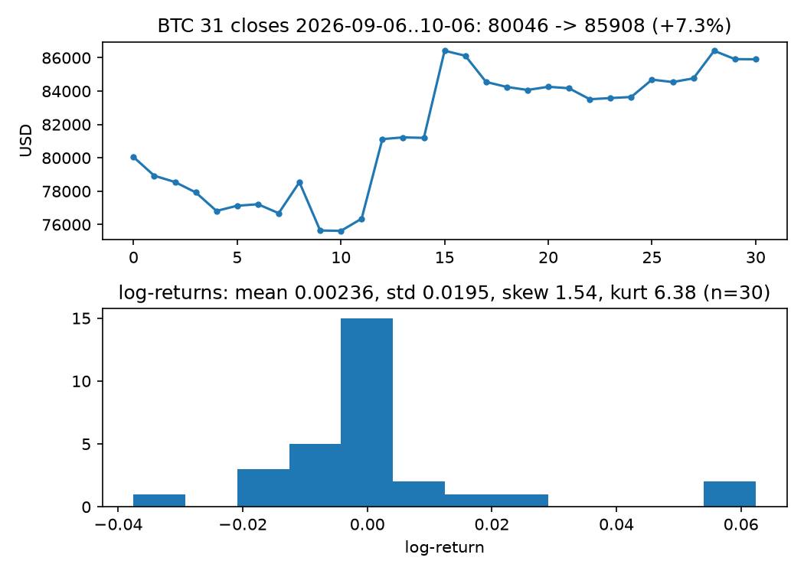
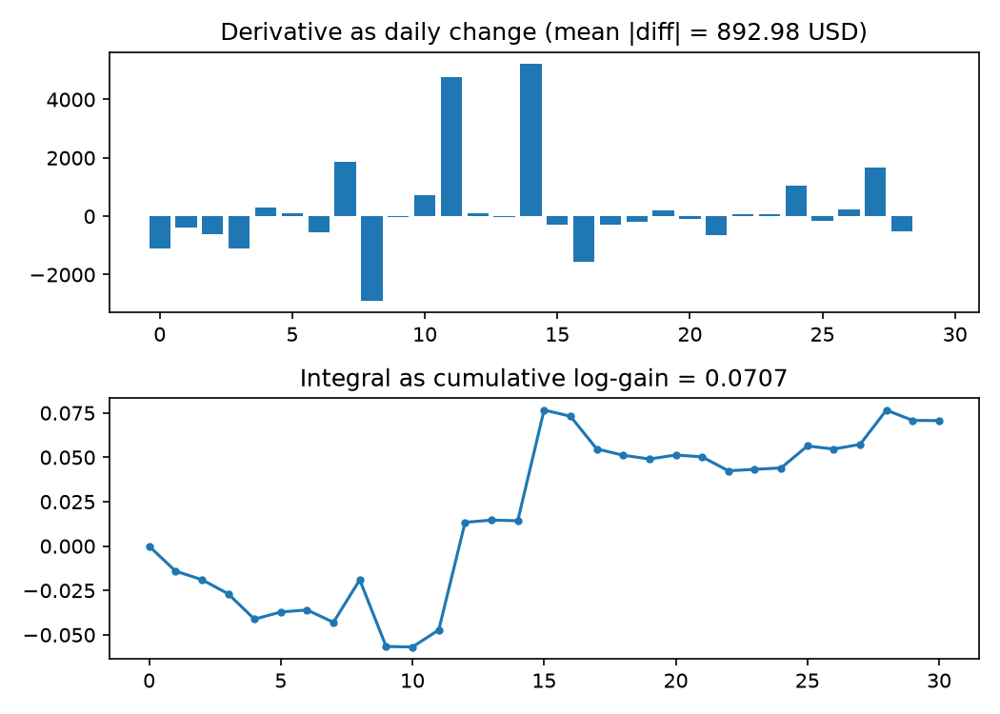
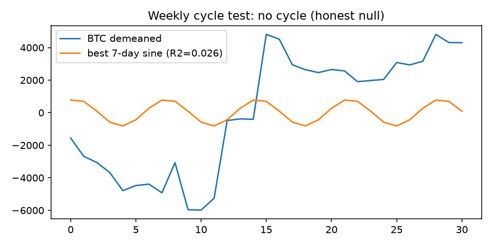

CEO summary: Start with one stone. Repeat something again and again, or Undo it. That is the whole tower: counting → AI. This repo proves every floor with runnable code and live market data, in pictures a beginner can follow in 10 minutes and an engineer can reproduce in one command.
Live demo below uses real numbers: BTC 80,046 → 85,908, Galton 1,024 paths with 252 to the middle, calculus that predicts motion, matrices that power AI.
Start in 60 seconds 🌱 See the 10 floors How to publish this pageYou need zero math. Follow the stones:
Step-by-step check: each claim has a green test in experiments/run_all.py. If it prints ALL FLOORS VERIFIED, you understood it correctly.
If video does not play on GitHub preview, open the GIF below — same story. To add your own YouTube demo: upload MP4 to a GitHub issue to get a URL, then link a thumbnail image to YouTube. See README § Demo.


10 rows, 2 choices each = 1,024 paths. Far left needs all-left: 1 path. Middle needs 5R+5L: 252 paths. 20k simulated balls peak at bin 5, χ²=18.35 — bell curve emerges.

Real closes 80,046.71 → 85,908.05 (+7.3%). Log-return mean 0.00236, std 0.0195, up 13/30 days. Skew 1.54, kurtosis 6.38 vs normal 0/3: bell core, fat tails.

Daily change = derivative (mean |change| 892.98 USD). Cumulative log-gain = integral 0.0707. Roundtrip error <1e-9: they undo each other.

Best 7-day sine explains R²=0.026 only. Reporting nulls is a feature: markets do not sing weekly here. BTC–JPY correlation +0.45 (n=22, hypothesis, not law).
| Floor | Idea in one line | Verified number |
|---|---|---|
| 1 Counting | Group by tens; 0 marks empty place | 235=[2,3,5], 205 uses 0 |
| 2 ×, powers | Add same = ×; × same = power; turn grid | 3×4=4×3=12; 2¹⁰=1024 |
| 3 Undo | −, fractions, √2 irrational | 3−5=−2; √2≈1.4142 |
| 4 Algebra | Balance both sides | x+3=7 → x=4 |
| 5 Functions | Machine in→out; plot = picture | 1→3,2→5; parabola 0,1,4,9 |
| 6 Shapes | 9+16=25; wheel height = sine | hypot(3,4)=5 |
| 7 Derivative | Zoom until straight = slope now | d/dx x² = 2x |
| 8 Integral | Thin bars summed = area; undoes derivative | ∫₀³x²=9 |
| 9 Matrices | Columns = where base arrows land; AI = big matrices | ‖[3,4]‖=5 |
| 10 Chance | Pegs → binomial → bell | 1024 paths, 252 middle |
run_all.py gatepip install -r requirements.txtpython experiments/run_all.py → expect ALL FLOORS VERIFIEDpython experiments/make_figures.py → regenerates GIF (endless loop) + MP4 + 4 chartsdocker compose up --build
Tech: Python 3.12, NumPy/SciPy/Pandas, Matplotlib PillowWriter + FFMpegWriter, Docker, single-file HTML. Prereqs: Python 3.12 + pip; ffmpeg for MP4; no keys (frozen data).
/ or /docs.https://<you>.github.io/<repo>/ — serves docs/index.html, identical to preview.html. Alternative: Actions configure-pages + upload-pages-artifact + deploy-pages.Why two files? preview.html is local preview (uses docs/assets/); docs/index.html is what Pages serves (uses assets/). Usage: run floor scripts solo, swap your CSV into data/live_btc_30d.csv format, rebuild figures. Roadmap: quiz + worksheets, more markets, translations. Back to top ↑